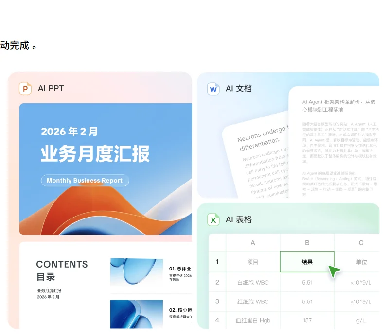

豆包工作字节跳动
豆包面向工作场景的智能体：“你说豆包干”，交付文档、表格、PPT、网页与应用；原生接入飞书，继承企业权限与知识，是字节整合 TRAE、扣子之后的办公主力产品。
一页结论
- 从“能写”到“能干”：豆包工作是豆包为生产力场景推出的全新 Agent 产品与品牌，围绕目标自主拆解任务、调用工具、持续推进S4
- 飞书是最大差异：用飞书账号登录后继承原有权限，可在授权范围内读取聊天、文档、会议纪要与日程；产出的内容沉淀回飞书继续协作S4S3
- 组织整合的结果：8 月 24 日 TRAE、扣子团队并入豆包体系，扣子作为智能体开发平台为豆包工作提供生态能力，次日豆包工作发布S9S5
- 全部用字节自研模型：Seed 2.1 负责规划与执行，Seedance 负责视频，Seedream 负责图像；付费版工作任务升级到 2.1 Pro 模型S3S2
- 国内办公 Agent 混战：与腾讯 WorkBuddy、阿里千问办公等正面竞争，大厂把 AI 投入从消费端转向办公场景S6
01公司介绍
02公司战略
字节把分散在豆包、TRAE、扣子、飞书里的办公 AI 能力，收拢到豆包工作这一个品牌下。
- 一个品牌承接工作场景：TRAE Work、扣子与豆包在工作场景的能力整合，TRAE IDE 与 CLI 留作编程产品线S9S5
- 借飞书拿到企业上下文：继承飞书权限与组织知识，是一般 Agent 工具没有的入口优势S4
- 自研模型全栈：从规划执行到图像、视频生成都用字节自家模型，成本与能力升级自己掌握S3
- 大厂转向办公 AI：在消费端投入高昂之后，字节、腾讯、阿里都把重心转向办公 AgentS6
03产品定位
| 项目 | 内容 |
|---|---|
| 一句话定位 | “工作新习惯，你说豆包干”：面向个人、团队和企业的智能体工作平台S1S3 |
| 目标用户 | 个人办公用户、团队与企业，尤其是飞书用户S3 |
| 核心场景 | 写方案、整理纪要、做调研、做表格与 PPT、数据分析、生成轻量业务应用S3S4 |
| 交付物 | 文档、PPT、表格、图表、图片、视频、在线应用S3 |

04产品与主要功能
豆包工作的特点是“飞书原生 + 字节自研模型”：执行能力与 ChatGPT Work、Claude Cowork 同类，差异在企业上下文和多媒体生成。
产品架构
交互入口
豆包工作电脑版豆包电脑版内的工作模式手机与浏览器（跨端接续任务）飞书内入口
Agent 层
复杂工作任务（理解目标、规划、执行）深度研究多 Agent 并行定时任务AI 编辑：框选局部定向修改
能力与扩展
上下文与运行
安全与管控继承飞书权限个人与企业数据隔离SSO 与水印智能体管理与风险发现成员行为审计
核心功能
截图来自豆包工作官网，2026-11-02。
12 项能力评估
终端 CLI无或未说明非主场景
代码审查无或未说明非主场景
05商业模式
个人可免费使用，团队与企业按席位订阅，另可购买共享的 AI 用量套餐。
| 档位 | 价格 | 包含 |
|---|---|---|
| 免费版 | ¥0 | 基础功能；新用户下载登录可领 30 天订阅权益S4 |
| 团队订阅 | ¥166 / 席 / 月（按年付，合计 ¥1,988 / 年）；按月付 ¥198 | 每席每月 2,000 点（限时加赠 2,000 点）、2.1 Pro 模型、更多定时任务与 AI 办公额度、1 TB 企业存储S2 |
| 企业订阅 | 联系销售 | 在团队版基础上增强安全与管理S2 |
| AI 用量套餐 | 加购 | 企业统一购买、成员共享，解锁 Seedance 2.0 / 2.5 视频模型S2 |
付费版企业数据不用于模型训练S2。
收费逻辑：用免费版和 30 天试用拉新，靠飞书企业客户的席位订阅变现；按席位计价对企业采购友好，用量套餐覆盖视频等高成本任务（分析意见）。
06上下游与渠道
上游：模型与算力
字节 Seed 团队自研模型火山引擎算力
豆包工作
电脑版、手机、浏览器
下游客户
个人办公用户飞书上的团队与企业
07市场表现
| 指标 | 数据 | 口径 |
|---|---|---|
| 豆包工作用户数 | 未公开 | 发布至今未披露 |
| 竞争格局 | 腾讯 WorkBuddy、阿里千问办公、百度等同期竞争 | 媒体报道S6 |
08用户口碑
发布时间较短，公开的用户评价以媒体评测为主，社区讨论有限。
09安全合规
10近期动态
11潜在风险分析意见
| 风险 | 表现 | 可能程度 |
|---|---|---|
| 国内同质化竞争 | 腾讯、阿里等同时推出办公 Agent，功能趋同，价格可能被压低S6 | 高 |
| 对飞书的依赖 | 最大差异来自飞书，非飞书用户的吸引力有限（分析意见） | 中 |
| 单一模型体系 | 只用字节自研模型，模型短板会直接反映在产品体验上S3 | 中 |
| 数据与权限风险 | Agent 可读取聊天、文档等企业数据，权限配置失误的后果更严重S4 | 中 |
| 组织频繁调整 | TRAE、扣子并入豆包后，产品线边界与资源分配仍在磨合（分析意见） | 低 |
“可能程度”为基于现有公开信息的判断，不是量化预测。
12综合结论分析意见
优势
- 豆包海量用户池与飞书企业入口
- 字节自研模型全栈，含视频与图像
- 企业安全与管理功能齐全
劣势
- 发布时间短，用户数据未公开
- 只用自家模型
机会
- 国内企业办公 Agent 的普及期
- 扣子生态带来的行业智能体
威胁
- 腾讯 WorkBuddy、阿里千问办公的同期竞争
- 企业对 Agent 读取内部数据的顾虑
对 AI 产品团队的启示
- 企业上下文是办公 Agent 的护城河：同样的执行能力，能不能读懂企业的聊天、文档和组织关系，决定交付质量。有协作平台的公司天然占优。
- 成果要能回流协作：产出直接沉淀回飞书继续编辑、分享，个人使用 AI 的结果才能变成团队资产。
- 按席位定价更适合企业：席位订阅加共享用量套餐，比纯按量计费更容易进入企业采购流程。
- 大公司要防止产品线内耗：先整合团队、再统一品牌，能减少多款同类产品互相抢用户。
信息缺口
以下信息未找到可靠的公开来源，本报告不做推测。
- 豆包工作的用户数与付费用户数
- 个人付费版的价格
- 企业订阅的价格与权益细节
- 所称“办公智能体能力与云端基准测试双项认证”的认证机构
来源
A 官方 · B 权威媒体或第三方 · C 社区（仅用于口碑与线索）。访问日期均为 2026-11-02。
- S1 · A豆包工作官网字节跳动
- S2 · A豆包工作定价字节跳动
- S3 · A豆包工作全新发布！详解核心价值、功能及与豆包、飞书的关系飞书官网 · 2026-08-24
- S4 · B豆包工作正式发布：让 AI 从生成内容到完成工作新华网 · 2026-08-25
- S5 · BByteDance consolidates AI office tools around Doubao财新 Caixin Global · 2026-08-25
- S6 · BByteDance Launches Doubao Work as China's Tech Giants Pivot to Office AI第一财经 Yicai Global · 2026-08
- S7 · B豆包工作（汇总发布后的功能更新）百度百科
- S8 · BQuestMobile 2026 年上半年 AI 应用市场发展洞察报告IT之家 · 2026-07-14
- S9 · BTRAE（汇总 2026-08 团队并入豆包等报道）百度百科
- S10 · B豆包工作正式发布：让 AI 从生成内容到完成工作新浪财经 · 2026-08-25